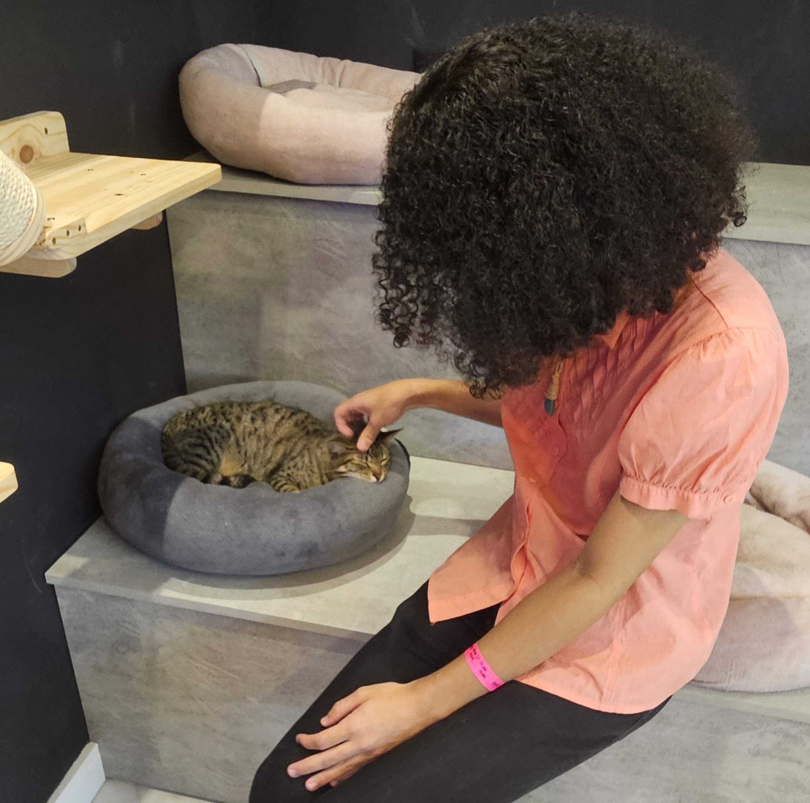

Esse jogo é um projeto do programa Twist Puc-Rio. No projeto cada grupo foi instruido de fazer um jogo diferente com o tema Puzzle utilizando apenas HTML, CSS, JS . Esse desafio faz parte do site CodePen que cria diversos challenges de programação, o utilizado no projeto foi o de julho de 2024, disponível em: https://codepen.io/challenges/2024/july.
Participantes do Grupo:
Fernanda Fukasawa
Me chamo Fernanda, tenho 19 anos. Faço engenharia da computação e estou no 4o período. Me formei no colégio Santo Inácio mas estudei até o 8o ano no Liceu Franco Brasileiro. Eu amo animais, principalmente gatos!
Maria Eduarda Avila
Oi, meu nome é Maria Eduarda, estudo engenharia de computação na PUC e tenho 18 anos. Nasci no Rio de Janeiro e estudei minha vida toda no colégio Marista São José-Barra. No meu tempo livre costumo ler e fazer crochê.
Me chamo Elena e tenho 20 anos, sou uma estudante de Ciências da Computação no segundo periodo e amante de gatos. Estudei no Lycée Molière a minha vida toda. No meu tempo livre, gosto ler e passar tempo com gatinhos .
